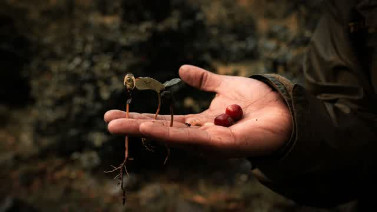

Advertencia:
Esta es una Interpretacion mia.
Existen muchos versiculos en la Biblia que si te pones a mirar hoy, parecen una Advertencia sobre el Colapso Ambiental. Listare algunas y abajo pondre mi interpretacion.
Apocalipsis 6:5-6“Un caballo negro… una medida de trigo por un denario, y tres de cebada por un denario; y no dañes el aceite ni el vino.”
Parece una Crisis de plantios, cosechas que fallan por sequía o escasez de granos, y justo estamos en la epoca donde te meten preso por plantar la creacion de Dios… Un caso muy conocido es en India donde la empresa (no lo quiero decir no me vayan a cerrar la web) demando a todos los que plantaban una variante de papa, podes pasar a leer Aqui ↗️. Desde el 2024 en dia Colombia, Argentina y Chile ya tienen leyes similares que prohiben la plantacion de semillas que las empresas se adueñaron… Y cada vez, las frutas ya vienen casi sin semillas… Nosotros parece estamos generando este Apocalipsis.

Apocalipsis 6:8
“Se les dio potestad sobre la cuarta parte de la tierra para matar con espada, con hambre, con mortandad y con las fieras de la tierra.”
Si se considerase empresas a quienes se le da el poder, entonces parece referencia a fauna silvestre desplazada hacia zonas habitadas al perder su hábitat.
Apocalipsis 6:12
“Y vi cuando abrió el sexto sello… hubo un gran terremoto; el sol se puso negro como tela de cilicio y la luna se volvió toda como sangre.”
El Humo en extremo pueden oscurecer el Sol y hacer que la Luna se vea roja por dispersión de la luz.
Apocalipsis 6:13
“Las estrellas del cielo cayeron sobre la tierra.”
Lluvias de meteoros, fragmentación de cometas o percepción visual de meteoritos.
Apocalipsis 6:14
“El cielo se desvaneció como un pergamino.”
Colapso visual por contaminación extrema, humo global, tormentas de polvo o alteraciones atmosféricas.
Apocalipsis 6:14
“Todo monte e isla fueron removidos.”
Grandes terremotos, tsunamis, movimientos tectónicos y aumento del nivel del mar.
Apocalipsis 7:1-3
“Ángeles que detenían los cuatro vientos de la tierra… No hagáis daño a la tierra, ni al mar, ni a los árboles.”
El texto ya nombra tierra, mar y árboles como lo que no debe dañarse. Los vientos contenidos se leen como sistemas climáticos sostenidos hasta un punto de quiebre: al liberarse, el daño llega junto.
Apocalipsis 8:7
“Granizo y fuego mezclados con sangre fueron lanzados sobre la tierra.”
Tormentas extremas, incendios forestales, ceniza volcánica y lluvia rojiza por polvo o algas. Repite el eco de Éxodo 9:23-25.
Apocalipsis 8:7
“La tercera parte de los árboles se quemó.”
Incendios forestales a gran escala provocados por sequías, calor extremo o actividad humana.
Apocalipsis 8:7
“Toda la hierba verde fue quemada.”
Desertificación, incendios masivos y olas de calor.
Apocalipsis 8:8
“Una gran montaña ardiendo fue arrojada al mar.”
Impacto de un asteroide, colapso volcánico o gran erupción insular.
Apocalipsis 8:8
“La tercera parte del mar se convirtió en sangre.”
Mareas rojas, proliferación masiva de algas tóxicas, contaminación química o mortalidad marina.
Apocalipsis 8:9
“Murió la tercera parte de los seres vivos del mar.”
Colapso de ecosistemas marinos por calentamiento, acidificación, sobrepesca y contaminación.
Apocalipsis 8:9
“La tercera parte de las naves fue destruida.”
Tsunamis, tormentas extremas, puertos inutilizados o colapso económico marítimo.
Apocalipsis 8:10
“Cayó del cielo una gran estrella llamada Ajenjo.”
Meteorito, contaminación química o radiactiva que vuelve tóxicas las fuentes de agua.
Apocalipsis 8:11
“La tercera parte de las aguas se convirtió en ajenjo.”
Contaminación industrial, metales pesados, pesticidas, residuos mineros o radiactividad.
Apocalipsis 8:11
“Muchos hombres murieron por las aguas.”
Agua potable contaminada, enfermedades, intoxicaciones ambientales.
Apocalipsis 8:12
“Fue herida la tercera parte del sol, de la luna y de las estrellas.”
Oscurecimiento atmosférico por aerosoles, humo, ceniza volcánica o contaminación.
Apocalipsis 8:12
“El día perdió la tercera parte de su luz.”
Invierno volcánico, humo persistente o impacto de gran asteroide.
Apocalipsis 9:2
“Se abrió el pozo del abismo y subió humo como de un gran horno.”
Erupción volcánica gigantesca, incendios de carbón o liberación masiva de humo industrial.
Apocalipsis 9:2
“El sol y el aire fueron oscurecidos por el humo.”
Contaminación atmosférica severa, incendios continentales, ceniza volcánica.
Apocalipsis 9:3-4
“Langostas salieron del humo.”
Plagas agrícolas favorecidas por cambios climáticos o pérdida de depredadores. El texto dice que dañan a las personas y no a las plantas, lo que también recuerda a insectos transmisores de enfermedades (dengue, malaria) que se expanden con el clima.
Apocalipsis 9:5
“Tenían poder para atormentar.”
Invasiones de insectos, enfermedades transmitidas por vectores.
Apocalipsis 9:14
“Desataron a los cuatro ángeles junto al Éufrates.”
Sin equivalente ambiental claro; el texto lo une a un contexto militar. Algunos lo relacionan con conflictos por agua en una cuenca que hoy sufre estrés hídrico.
Apocalipsis 9:18
“El fuego, humo y azufre mataron a la tercera parte de la humanidad.”
Contaminación tóxica, guerra química, emisiones volcánicas o nucleares.
Apocalipsis 9:20
“Los demás hombres… no se arrepintieron de las obras de sus manos.”
Persistencia de actividades contaminantes pese a la evidencia científica.
Apocalipsis 11:6
“Los dos testigos tienen poder para cerrar el cielo para que no llueva.”
Sequías prolongadas por alteración climática, fenómeno de El Niño, desertificación. Sobre teorías tipo HAARP: muy improbable; el texto habla de poder sobrenatural y referencia a Elías (1 Reyes 17), y no hay evidencia de que HAARP impida lluvias a escala continental: su potencia es millones de veces inferior a la energía de la atmósfera.
Apocalipsis 11:6
“Convertir las aguas en sangre.”
Contaminación hídrica severa.
Apocalipsis 11:6
“Herir la tierra con toda plaga.”
Desastres ecológicos múltiples.
Apocalipsis 11:18
“…y de destruir a los que destruyen la tierra.”
Pieza central del lente: el juicio se dirige a quienes arruinan la tierra. El verbo griego (diaphtheirō) significa corromper o arruinar. Desde aquí, contaminación, deforestación y sobreexplotación son el motivo explícito del texto, no una lectura forzada.
Apocalipsis 11:19
“Hubo relámpagos, voces, truenos, terremoto y gran granizo.”
Eventos climáticos extremos asociados al calentamiento global.
Apocalipsis 12:15
“El dragón arrojó agua como un río.”
Grandes inundaciones o tsunamis.
Apocalipsis 12:16
“La tierra ayudó a la mujer tragándose el río.”
Sumideros, fracturas del terreno, absorción natural de inundaciones.
Apocalipsis 16:2
“Una úlcera maligna cayó sobre los hombres.”
Exposición a sustancias tóxicas, radiación, contaminación química.
Apocalipsis 16:3
“El segundo ángel derramó su copa sobre el mar y éste se convirtió en sangre como de muerto.”
Zona muerta oceánica por contaminación y pérdida total de oxígeno.
Apocalipsis 16:3
“Murió todo ser viviente del mar.”
Colapso ecológico marino extremo.
Apocalipsis 16:4
“El tercer ángel derramó su copa sobre ríos y fuentes.”
Contaminación completa de agua dulce.
Apocalipsis 16:8
“Cuarto ángel derramó su copa sobre el sol; y al sol le fue dado quemar a los hombres con fuego.”
Olas de calor extremas potenciadas por el cambio climático. También puede recordar al deterioro de la capa de ozono (mayor radiación UV), aunque el texto habla del calor del Sol, no específicamente de radiación ultravioleta.
Apocalipsis 16:9
“Los hombres fueron quemados con gran calor.”
Récords históricos de temperatura, golpes de calor, incendios.
Apocalipsis 16:9
“Y blasfemaron contra Dios.”
El texto atribuye la reacción humana a no reconocer el juicio divino. Desde una perspectiva científica, el origen sería principalmente la actividad humana sobre el clima.
Apocalipsis 16:10
“El reino quedó en tinieblas.”
Apagones masivos, contaminación atmosférica, ceniza volcánica.
Apocalipsis 16:12
“Secó el gran río Éufrates.”
Sequías, sobreexplotación del agua y cambio climático. El propio Éufrates ha mostrado descensos importantes de caudal en tiempos modernos.
Apocalipsis 16:19
“La gran ciudad fue dividida.”
Destrucción urbana por terremotos o desastres climáticos.
Apocalipsis 16:20
“Las islas huyeron y los montes desaparecieron.”
Elevación del nivel del mar, erosión costera, hundimientos y cambios geológicos.
Apocalipsis 16:21
“Del cielo cayó sobre los hombres un enorme granizo.”
Tormentas severas con granizo de gran tamaño favorecidas por atmósferas más energéticas.
Apocalipsis 18:3
“Los mercaderes de la tierra se enriquecieron con la potencia de sus deleites.”
Consumo desmedido y extractivismo: la riqueza de unos se financia con el desgaste de los recursos de todos.
Apocalipsis 18:11-13
“Cargamentos de oro, plata, piedras preciosas… madera preciosa, marfil, canela, ganado, ovejas, caballos…”
Lista de comercio global que incluye madera, marfil y ganado: tala, tráfico de fauna y ganadería industrial como motores de la degradación ambiental.
Apocalipsis 18:17-19
“En una hora fue desolada tanta riqueza… todos los que tenían naves en el mar se habían enriquecido.”
Colapso económico rápido de un sistema que depende del comercio marítimo y de recursos que se agotan.
Apocalipsis 21:1
“Habrá cielo nuevo y tierra nueva.”
Interpretación tradicional: renovación completa de la creación. Desde el lente ambiental: la Tierra cambia tanto por la contaminación que termina siendo un planeta distinto (atmósfera diferente, océanos diferentes, nuevos compuestos químicos, extinción masiva, ecosistema irreconocible). Literalmente una “nueva Tierra”, aunque no en el sentido positivo del texto.
Apocalipsis 21:1
“Ya no existirá el mar.”
Interpretación tradicional: el mar simboliza el caos, el mal y la separación. Desde el lente ambiental: evaporación extrema, transformación química, océanos convertidos en masas tóxicas o pérdida de su función biológica. No implica necesariamente que desaparezca físicamente el agua.
Apocalipsis 22:1-2
“Un río limpio de agua de vida… y a cada lado del río, el árbol de la vida… y las hojas del árbol eran para la sanidad de las naciones.”
El lente se invierte: lo que se restaura es justo lo que antes se perdió (agua limpia, árboles, sanidad). Se lee como restauración ecológica: ríos limpios, reforestación y salud pública ligada al ambiente.
Génesis 2:15
“Lo puso en el jardín para que lo cultivara y lo cuidara.”
Administración responsable del medio ambiente.
Génesis 3:17-18
“Maldita será la tierra por tu causa… espinos y cardos te producirá.”
La acción humana altera la tierra: suelos degradados, maleza invasora, cultivos que rinden menos.
Génesis 6:11-13
“La tierra estaba corrompida… llena de violencia… los destruiré junto con la tierra.”
Humanidad y tierra comparten destino: el deterioro de una arrastra a la otra.
Génesis 9:9-10
“Yo establezco mi pacto con vosotros… y con todo ser viviente que está con vosotros.”
La naturaleza es parte del pacto, no un simple recurso. Base para hablar de protección de la biodiversidad.
Éxodo 7:18-21
“Los peces que hay en el río morirán, y el río hederá.”
Contaminación de ríos y lagos: mortandad de peces, agua no potable y mal olor.
Éxodo 9:23-25
“Y hubo granizo, y fuego mezclado con el granizo, muy grande… y destrozó todo árbol del campo.”
Tormentas destructivas que arrasan cultivos y arboledas. Es el modelo que retoma Apocalipsis 8:7.
Levítico 18:25-28
“La tierra vomitó a sus moradores… no sea que la tierra os vomite por contaminarla.”
Lectura ambiental: la tierra tiene límites y responde a su contaminación; un suelo abusado deja de sostener a quienes lo habitan.
Levítico 25:4 y 26:34-35
“El año séptimo la tierra tendrá descanso… entonces la tierra descansará y disfrutará sus sábados.”
Barbecho y rotación: dejar descansar el suelo. Su ausencia equivale a sobreexplotación agrícola.
2 Crónicas 36:21
“Hasta que la tierra disfrutó de sus sábados.”
El exilio como período en que la tierra se recupera del abuso.
Deuteronomio 20:19-20
“No destruirás sus árboles metiendo hacha en ellos, porque de ellos podrás comer.”
Protección de árboles frutales incluso en guerra; lo contrario es la tierra arrasada.
Deuteronomio 22:6-7
“Si encuentras un nido… no tomarás la madre con los hijos; dejarás ir a la madre.”
Caza y recolección sostenibles: proteger a los reproductores para no agotar la especie.
Deuteronomio 28:23-24
“El cielo que está sobre tu cabeza será de bronce, y la tierra que está debajo de ti, de hierro… polvo y ceniza.”
Sequía, suelos endurecidos, desertificación y tormentas de polvo.
Job 31:38-40
“Si mi tierra clama contra mí, y lloran juntos sus surcos…”
Suelos agotados y erosionados como evidencia del mal manejo del campo.
Salmo 24:1
“Del Señor es la tierra y su plenitud.”
La naturaleza no pertenece al ser humano de manera absoluta.
Salmo 107:33-34
“Convierte los ríos en desierto… la tierra fructífera en salitral, por la maldad de los que la habitan.”
Salinización, desertificación y ríos secos con causa humana explícita en el propio texto.
Proverbios 12:10
“El justo cuida la vida de su bestia.”
Trato responsable hacia los animales y el ganado.
Isaías 5:8-10
“¡Ay de los que juntan casa a casa y añaden campo a campo, hasta que no queda lugar!.. diez yugadas de viña darán un bato.”
Concentración de tierras y monocultivo que agotan el suelo y bajan el rendimiento.
Isaías 14:8
“Los cipreses se alegran… diciendo: desde que tú yaces, no ha subido cortador contra nosotros.”
Los bosques celebran el fin del tirano que los talaba: deforestación al servicio de un imperio.
Isaías 24:4-6
“La tierra se enluta y se marchita… La tierra se contaminó bajo sus habitantes, porque quebrantaron el pacto eterno.”
Contaminación ambiental causada por la humanidad, ligada a romper un pacto de cuidado.
Isaías 33:9
“La tierra se enluta y languidece; el Líbano se avergüenza y se marchita.”
Pérdida de bosques históricos, como los cedros del Líbano.
Jeremías 4:23-26
“Miré la tierra, y estaba desordenada y vacía; los cielos no tenían luz… y no había hombre, y todas las aves del cielo habían huido.”
Colapso total de un ecosistema: Génesis 1 al revés. Deforestación, desertificación y guerra dejan un paisaje sin vida.
Jeremías 12:4
“¿Hasta cuándo estará desolada la tierra… por la maldad de los que en ella moran, faltaron los ganados y las aves.”
Pérdida de biodiversidad por actividad humana.
Ezequiel 34:18-19
“¿Os es poco… que pisoteéis con vuestros pies lo que queda de vuestros pastos, y enturbiéis las aguas?”
Sobrepastoreo y contaminación del agua por uso descuidado.
Ezequiel 47:8-9
“Estas aguas… entrarán en el mar, y las aguas del mar serán sanadas.”
Restauración de cuerpos de agua muertos: recuperar ríos, lagos y mares contaminados.
Oseas 4:1-3
“Por eso la tierra está de duelo… desaparecen animales, aves y peces.”
Pérdida de biodiversidad por actividad humana.
Joel 1:10-12
“Los campos están destruidos; los árboles se secaron.”
Sequías, olas de calor y pérdida agrícola.
Amós 4:7-9
“Os detuve la lluvia… llovió sobre una ciudad y sobre otra no llovió… os herí con tizoncillo y con añublo.”
Lluvias irregulares, sequías localizadas y plagas de cultivos.
Sofonías 1:2-3
“Destruiré los hombres y las bestias; destruiré las aves del cielo y los peces del mar.”
Extinción masiva y colapso de ecosistemas terrestres, aéreos y marinos.
Lucas 21:25-26
“En la tierra angustia de las gentes, por el bramido del mar y de las olas.”
Tormentas marinas, aumento del nivel del mar y la angustia colectiva que hoy se llama ecoansiedad.
Romanos 8:19-22
“Toda la creación gime.”
La degradación ambiental afecta a todos los ecosistemas.
2 Pedro 3:10-12
“Los cielos pasarán con gran estruendo, y los elementos ardiendo serán deshechos.”
Impacto cósmico, explosión atmosférica o calentamiento extremo que altera la composición del planeta.
Sabiduría 16:24 (deuterocanónico)
“La creación sirve contra los injustos.”
Las malas prácticas terminan perjudicando al propio ser humano.
Nota: desde la exégesis bíblica, el consenso académico sostiene que el Apocalipsis usa lenguaje apocalíptico simbólico sobre las primeras comunidades cristianas bajo el Imperio romano y sobre juicio y esperanza. Las semejanzas con fenómenos actuales son una lectura contemporánea; este documento solo propone mirar con otro lente.